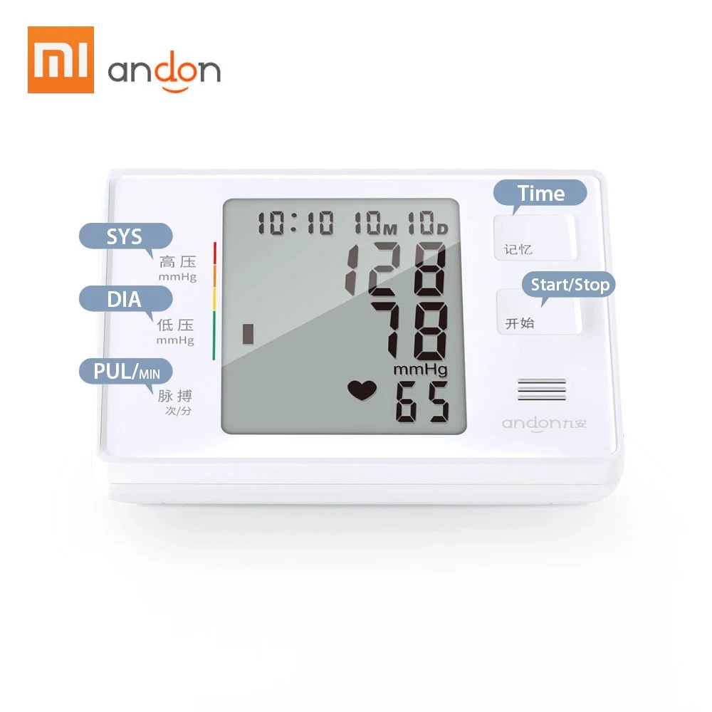
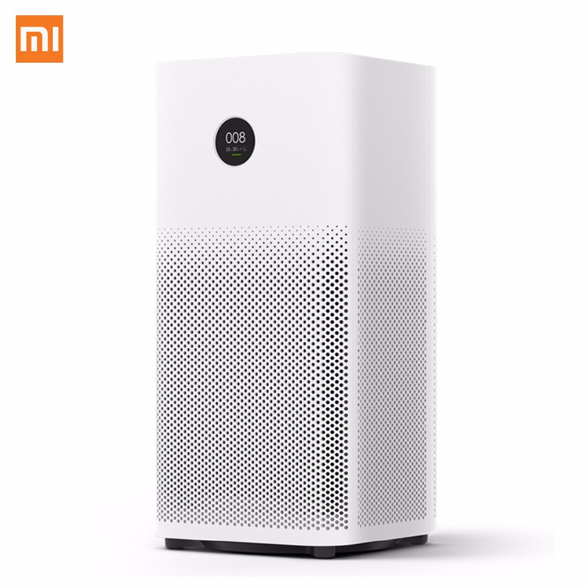
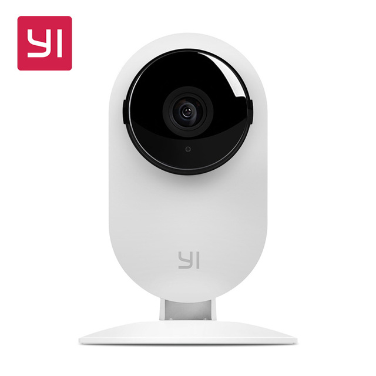

米家 (Mijia)
Mi Home
Mi Home adalah satu-satunya aplikasi yang mengelola produk Xiaomi smart home : digunakan untuk mengelola dan berkomunikasi dengan perangkat dan menghubungkannya ke jaringan dan menghubungkan perangkat satu sama lain, menggunakan Wifi dan Bluetooth. Telah dikritik karena tidak kompatibel dengan Google Home . Untuk beberapa produk seperti kamera Mi, perlu ada sinkronisasi antara Akun Mi Home dan aplikasi Google Home.
Monitor Tekanan Darah
Xiaomi meluncurkan monitor tekanan darah pintar pada 24 September 2014, bekerja sama dengan iHealth Labs di Silicon Valley, AS. Aplikasi yang menyertai melacak tekanan darah, denyut jantung, denyut nadi rata-rata dan parameter lainnya pada grafik real-time, kemudian membuat rekomendasi untuk perbaikan.
Pembersih Udara (Air Purifier)
Xiaomi merilis Mi Air Purifier pada 9 Desember 2014 di Beijing. Produk ini bisa untuk membersihkan hingga 406 m3 udara dalam satu jam. Produk ini telah menggunakan teknologi HEPA untuk mengurangi polusi partikel dari setinggi 600 ppm menjadi 2,5 ppm. Ini memiliki monitor kualitas udara real-time. Pengguna dapat menyinkronkannya dengan smartphone untuk mengontrolnya dari jarak jauh, menerima data kualitas udara, dan diperingatkan ketika filter udara kotor.
Yi Smart Webcam
Xiaomi merilis Smart Webcam Yi (juga disebut Yi [semut] atau Xiaoyi) untuk CNY 149 pada 29 Oktober 2014. Ini memiliki resolusi 720p, lensa sudut lebar 111 o dengan zoom 4x, dan kemampuan untuk melakukan panggilan suara dua arah. Diaktifkan dan dapat dilihat melalui smartphone, ini berfungsi ganda sebagai webcam untuk chatting dan kamera keamanan dengan kemampuan merekam. Kamera secara otomatis merekam kapan pun ia mendeteksi gerakan yang terlihat. Pada Juni 2015, Xiaomi meluncurkan edisi night vision dari Yi Camera dengan sensor inframerah 940 nm.
Semua Perangkat Dalam Satu Genggaman

Spesifikasi, Dimensi, dan Harga Mi Home Security Camera
Dimensi dan spesifikasi:
- Dimensi Produk : 78 x 78 x 118mm
- Berat Produk : 239 gram
- Daya input : 5V -=- 1A
- Sudut kamera : 110°
- Resolusi : 1080p
- Panjang fokus : 3,9mm
- Suhu pengoperasian : -10℃ ~ 50℃
- Konektivitas : Wi-Fi IEEE 802.11 b/g/n 2.4 GHz
- Penyimpanan : kartu MicroSD (mendukung 16GB - 64GB, kartu penyimpanan Class 10 dan di atasnya)
- Perangkat yang didukung : Android 4.4 ke atas atau IOS 9.0 ke atas